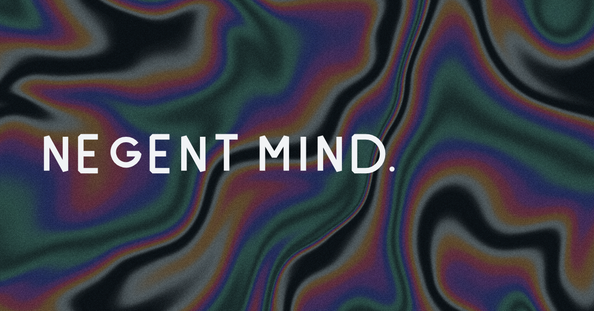
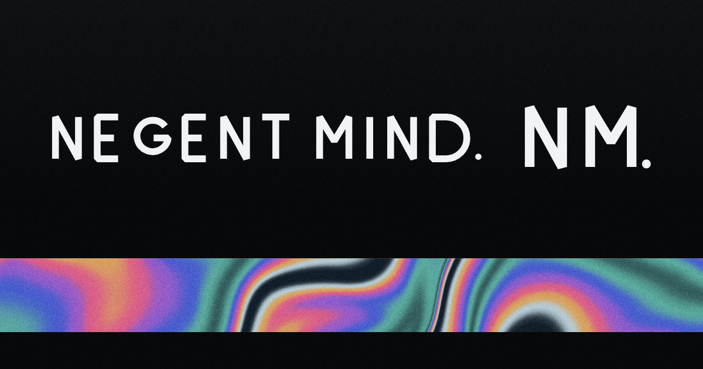
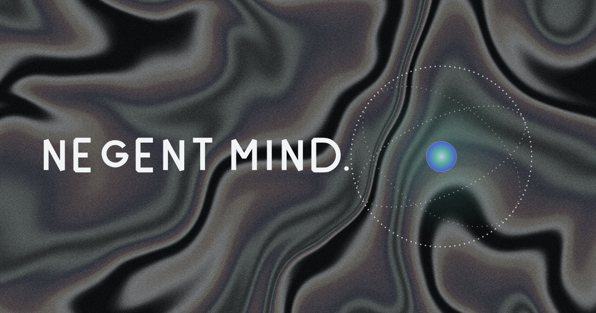

OG IMAGE · 1200×630
Mismas composiciones que el banner adaptadas al ratio social.
v1 — Strata
og-v1.png
warp full-bleed + velo 60% + wordmark

v2 — Spectrum
og-v2.png
carbón + franja espectral + wordmark + monograma

v3 — Core
og-v3.png
warp monocromo + core-orb + wordmark
